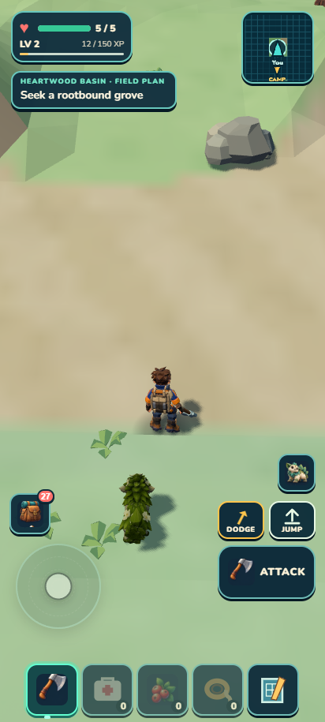
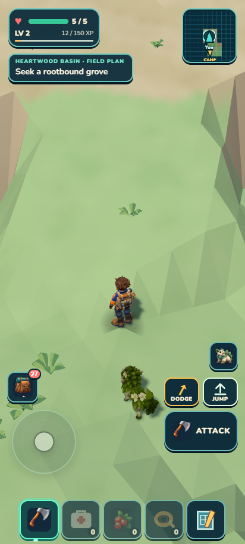
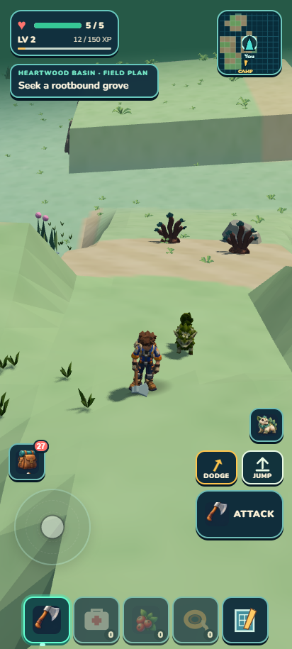
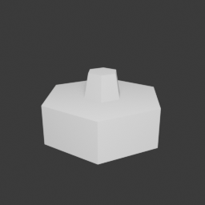

CONTINUOUS ROTATION · LOCAL CHECKPOINT · NO PUSH
Skybreak: a walkable circuit, with the larger visual work still ahead.
The crown now has one embedded, solid cliff buttress at its left edge. Independent visual review remains 3.4/10 HOLD: this small contribution does not deliver the target’s layered plateau, arrival threshold or richer ecology. The visit closes here; a second terrain-hidden attachment was rejected before integration.
The local outing takes three minutes
The ordinary-control circuit took 3m6s over256.1m. The full Camp-to-Camp outing, including the woodland commute, took6m42s over590.4m. All21 stops were reached with one walking detour, three berries and four wood gained, and full health on return. Coordinates guided the scripted controls; this is not unaided human navigation.
The crystal source depleted, while carried shards remained2→2. That outing reward is not credited. A separate isolated pickup witness resolved the reward-path uncertainty: four crystal shards remained as a resting loose pickup after harvest, then ordinary movement toward that actual drop collected them (2→6), with exact literal reload. This does not add shards to the original full-outing result. The focused reward receipt separates expected shard routing, loose-pickup evidence and unresolved collection claims.
Actual route views

Arrival: broad transition remains visually weak
Ascent: existing climb is traversable; shelf hierarchy remains weak
Return: the existing lowland descent remains openThe old entrance/crown landform crosses the newer Heartwood/Skybreak allocation boundary. Actual HUD names are preserved. This visit does not stand for the entire allocated Skybreak region.
Solid contact and streaming
Thirty-one downward probes hit the new matching convex surface. Unloading removes its collider; returning restores exactly one stable surface. The six existing Terrace rocks retain their behavior. Terrain, staged ecology/scenery identities, camera and lighting owners are unchanged.
What changed in the modeling workflow

Actual Blender method probe — one closed shell/collar; not a creatureTrailgloam’s manual anatomy visit closes HOLD after three attempts. One detached hoof, a later disconnected construction, and a final pre-render aperture failure prevented admission. The plan also contained a contradictory headline footprint; the planner now must compute full appendage bounds before approval. After construction diverges from a reviewed recipe, the next executable script needs independent inspection before another run.
A separate tiny collar test found and repaired an index-correspondence error. Its actual Blender output has24 vertices,20 faces, one component, no open edges and no reported non-adjacent overlaps. The independent PASS applies only to this abstract method, not Trailgloam or future assets.
Checkpoint proof
1,419 tests, verify and ZIP pass. ZIP 20.60MiB; unpacked 44.43MiB. Complete progress, inventory and ecology match after the outing’s literal reload. The portable continuation and original earned Camp compare exactly; the original Camp also matches in the developer build. No console errors or external requests were observed in those portable checks. Isolated save copies protected the user’s browser storage.
These are browser phone-viewport checks, not a physical-phone performance measurement. The habitat and species visual holds remain. The continuous goal advances to Sunscar’s own plan, reviewed portrait targets and asset feasibility work.
Try it in play
- Leave Mossling Camp toward the northern woodland. Keep west of the territorial creature and collect from the berry bush near the broad tableland approach; the berry count should rise.
- Return to the open foot of the pale ramp, follow its bend left, then right onto the crown. Stay on the centre of the climb. Stuck movement or sliding through the cliff are failure signs.
- Look toward the crystal from the open crown: the new low cliff face should sit at the left edge, with the centre clear. Walk into the face, then back away; both contact and retreat should feel solid.
- Approach the eastern crystal and remain near its loose drop after harvesting. Verify the shard count explicitly; depletion alone is not collection proof.
- Descend the eastern side and follow the woodland route back to Camp. Close and reopen: carried supplies and harvested sources should persist.
Measured checkpoint · Independent review · Contact/streaming receipt · Independent method judgment